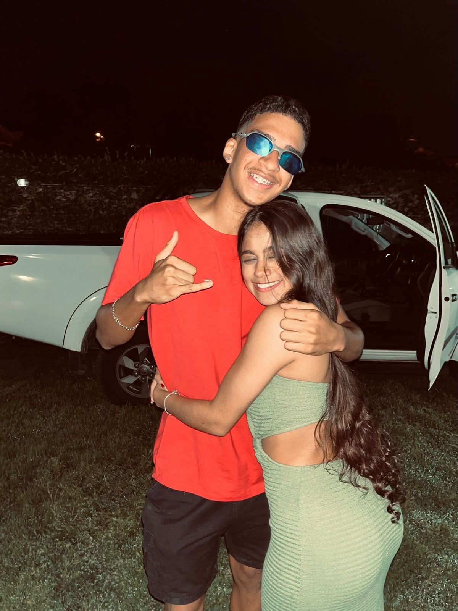
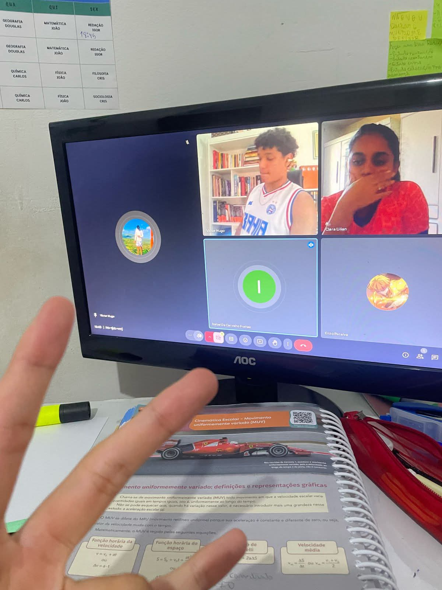
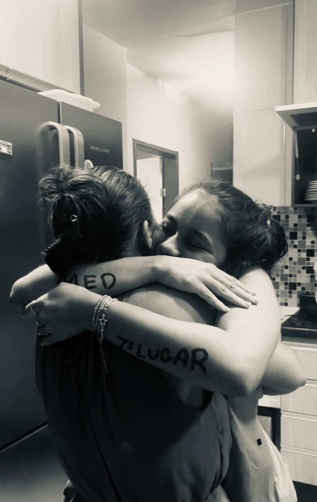
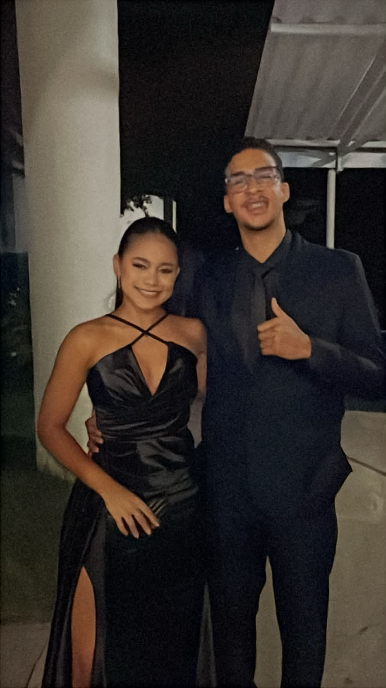

Algumas coisas merecem ser lembradas para sempre
Dia 22 de maio sempre vai ser um dia especial pra mim, porque é o seu dia. E eu queria muito poder estar aí agora pra te dar um abraço daqueles bem apertados. Clara, a gente já viveu tanta coisa juntos que, se eu fosse colocar tudo aqui, esse site não teria fim. Então eu escolhi alguns momentos, em ordem cronológica, que eu guardo com mais carinho e que sempre me fazem sorrir quando lembro. Você é uma pessoa muito importante pra mim, e eu gosto de verdade da sua amizade, das nossas conversas, das risadas e de cada memória que a gente construiu ao longo do tempo.

Niver 2024
Além das besteiras que a gente fez akakakak, foi muito bom poder viver seus 16 anos do seu lado, com pessoas que fizeram tudo ficar ainda mais especial. E querendo ou não, 16 anos é uma idade marcante demais, principalmente pra uma mulher… é aquela fase de descobrir muita coisa, mudar, sonhar alto e começar a enxergar a vida diferente. E sinceramente? Acho muito lindo olhar pra menina que você era naquela época e ver a mulher incrível que você tá se tornando hoje. Dá pra perceber o quanto você amadureceu sem perder esse jeitinho leve e especial que sempre foi tão seu.

Aulas com o macaquinho
SIM, até as aulas foram especiais. Lembro como se fosse ontem… foi um momento muito delicado da minha vida, em que Deus afastou amizades que estavam me levando para baixo e me mostrou que as melhores amizades são aquelas que não te abandonam, mesmo quando você acaba deixando elas de lado. Foram dias como esse que me mostraram que os estudos valem a pena.

MEDICINAA
Mesmo você atualmente cursando Direito, o dia em que você passou em Medicina eu nem sei explicar o que senti. Foi felicidade, alívio e gratidão, tudo ao mesmo tempo. Ver alguém tão especial para mim colhendo os frutos de tantas noites de estudo é muito gratificante. Mesmo você não cursando Medicina atualmente, eu continuo muito orgulhoso das suas vitórias e do caminho que você está trilhando.

Formandoss
Obs.: desculpa pela qualidade da foto… AAAA, a formatura… que dia lindo. Um momento tão especial, que marca a quebra de um ciclo velho para o início de um novo. Infelizmente, não nos encontramos nesse novo ciclo. Mas saiba que, mesmo de Salvador, eu estou aqui vibrando pelo seu sucesso, Clara. Você é fantástica, uma mulher que eu tive o prazer de ver crescer e que estou vendo amadurecer. Muito obrigado pela sua vida.
Você faz parte da minha família e da minha trajetória❤️
Obrigado por crescer comigo, pelos momentos, pelas conversas aleátorias sobre a vida e por sempre estar presente em momentos bons e ruins.